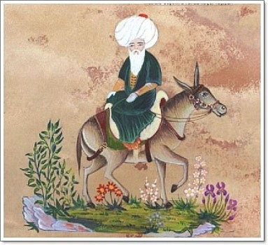
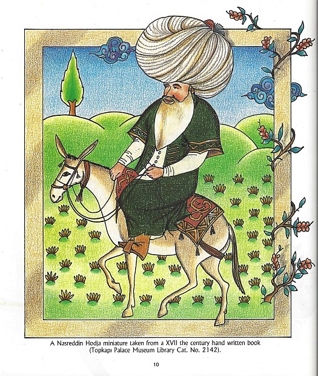
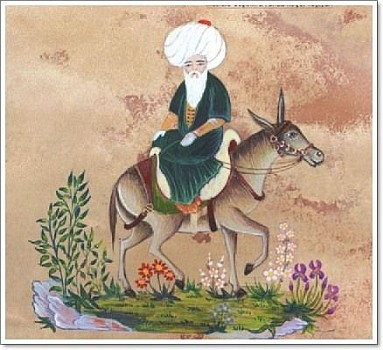
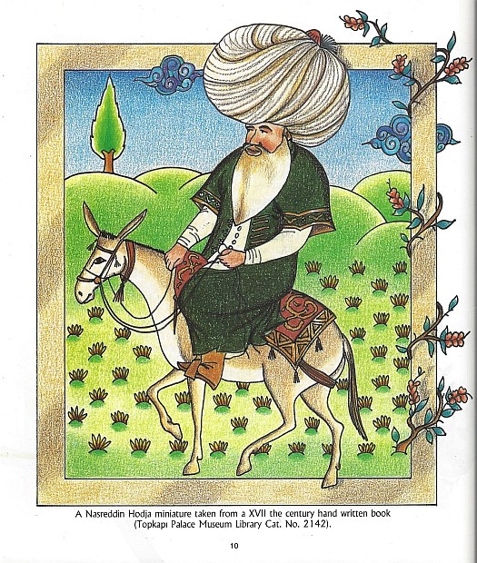

Bywamy w domach kultury, szkołach szpitalach, bibliotekach , zakładach karnych... Wchodzimy na sceny teatralne i kawiarniane - jesteśmy tam, gdzie zmęczeni kulturą masową słuchacze czekają na bezpośredni kontakt z żywym słowem, z tradycją znaną i cenioną od pokoleń - opowiadaniem.
Description of the theatreWe visit community centers, schools, hospitals, libraries, prisons ... We enter the theater and café stages - we are there where listeners, tired of mass culture, wait for direct contact with a living word, with a tradition known and appreciated for generations - a story.
Historie wyczynów i mądrości legendarnego Hodży Nasreddina krążyły po Bliskim i Środkowym Wschodzie od XIII wieku. Był immamem, mężem, ojcem, sąsiadem, gościem na dworze niejednego władcy, nauczycielem, wędrowcem, mistrzem życia i humoru... Był, po prostu, Pięknym Człowiekem Wielkiego formatu a jego spuścizna stała się przedmiotem badań wielu literaturoznawców z całego Świata.
W tym filmiku Łowcy Słów dzielą się kilkoma anegdotami z życia Wspaniałego Mędrcy Orientu.
Stories of the exploits and wisdom of the legendary Hoxha Nasreddin have been circulating in the Near and Middle East since the 13th century. He was an immam, husband, father, neighbour, guest at the court of many rulers, teacher, wanderer, master of life and humour ... He was simply a Beautiful Man of Great Format and his legacy became the subject of research of many literary scholars from around the world.
In this video, the Łowcy Snów (Word Hunters) share some anecdotes about the life of the Great Sages of the Orient.